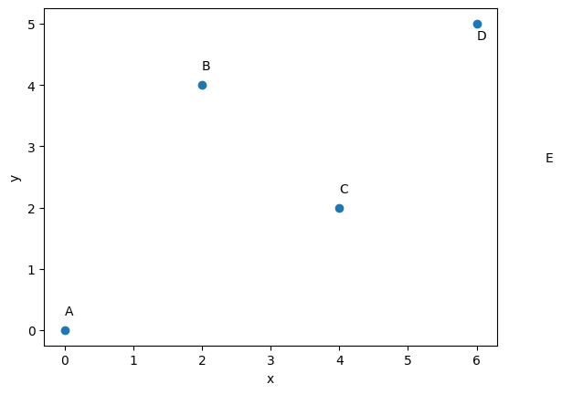
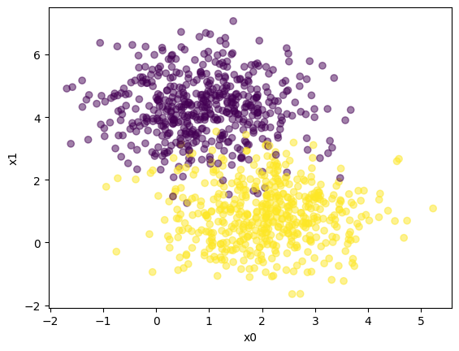
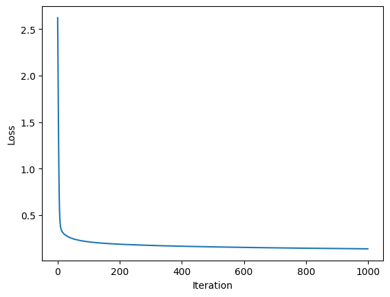
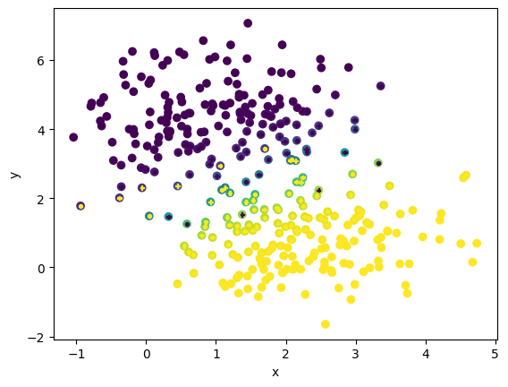

import numpy as np
from scipy.optimize import minimize
import matplotlib.pyplot as plt
# Define the cities and their coordinates (x, y)
cities = {
'A': (0, 0),
'B': (2, 4),
'C': (4, 2),
'D': (6, 5)
}
num_cities = len(cities)
#now plot the city locations
fig,ax = plt.subplots(1,1)
plt.scatter([x for x, y in cities.values()], [y for x, y in cities.values()])
ax.text(0, 0.25, 'A');ax.text(2, 4.25, 'B');ax.text(4, 2.25, 'C');ax.text(6, 4.75, 'D');ax.text(7, 2.75, 'E')
plt.xlabel('x');plt.ylabel('y')
plt.show()

# Function to calculate the Euclidean distance between two cities
def calculate_distance(city1, city2):
x1, y1 = cities[city1]
x2, y2 = cities[city2]
return ((x1 - x2) ** 2 + (y1 - y2) ** 2) ** 0.5
# Objective function for minimization
def objective_function(tour_order):
tour_order = tour_order.astype(int)
total_distance = 0
startcity = list(cities.keys())[tour_order[0]]
for i in range(num_cities - 1):
city1 = list(cities.keys())[tour_order[i]]
city2 = list(cities.keys())[tour_order[i + 1]]
total_distance += calculate_distance(city1, city2)
total_distance += calculate_distance(city2, startcity) # Return to the starting city
def constraint_fun(solution):
constrain= []
# Check that each city is visited only once.
for i in range(len(solution)):
for j in range(i + 1, len(solution)):
if solution[i] == solution[j]:
constrain.append(1)
else:
constrain.append(0)
return (sum(constrain), sum(solution) - 6)
# Define the bounds for the decision variables
bounds = [(0, num_cities - 1) for _ in range(num_cities)]
# Create a constraints dictionary for use in minimize
cons = {'type': 'eq', 'fun': constraint_fun}
# Initial guess (starting tour order)
initial_tour_order = np.array([1,2,0,3])
# Solve the TSP using scipy.optimize.minimize
minimize(objective_function, initial_tour_order, bounds=bounds, method='SLSQP')
---------------------------------------------------------------------------
TypeError Traceback (most recent call last)
Cell In[7], line 2
1 # Solve the TSP using scipy.optimize.minimize
----> 2 minimize(objective_function, initial_tour_order, bounds=bounds, method='SLSQP')
File ~/opt/anaconda3/envs/jupiterbook/lib/python3.9/site-packages/scipy/optimize/_minimize.py:719, in minimize(fun, x0, args, method, jac, hess, hessp, bounds, constraints, tol, callback, options)
716 res = _minimize_cobyla(fun, x0, args, constraints, callback=callback,
717 bounds=bounds, **options)
718 elif meth == 'slsqp':
--> 719 res = _minimize_slsqp(fun, x0, args, jac, bounds,
720 constraints, callback=callback, **options)
721 elif meth == 'trust-constr':
722 res = _minimize_trustregion_constr(fun, x0, args, jac, hess, hessp,
723 bounds, constraints,
724 callback=callback, **options)
File ~/opt/anaconda3/envs/jupiterbook/lib/python3.9/site-packages/scipy/optimize/_slsqp_py.py:374, in _minimize_slsqp(func, x0, args, jac, bounds, constraints, maxiter, ftol, iprint, disp, eps, callback, finite_diff_rel_step, **unknown_options)
371 xu[infbnd[:, 1]] = np.nan
373 # ScalarFunction provides function and gradient evaluation
--> 374 sf = _prepare_scalar_function(func, x, jac=jac, args=args, epsilon=eps,
375 finite_diff_rel_step=finite_diff_rel_step,
376 bounds=new_bounds)
377 # gh11403 SLSQP sometimes exceeds bounds by 1 or 2 ULP, make sure this
378 # doesn't get sent to the func/grad evaluator.
379 wrapped_fun = _clip_x_for_func(sf.fun, new_bounds)
File ~/opt/anaconda3/envs/jupiterbook/lib/python3.9/site-packages/scipy/optimize/_optimize.py:383, in _prepare_scalar_function(fun, x0, jac, args, bounds, epsilon, finite_diff_rel_step, hess)
379 bounds = (-np.inf, np.inf)
381 # ScalarFunction caches. Reuse of fun(x) during grad
382 # calculation reduces overall function evaluations.
--> 383 sf = ScalarFunction(fun, x0, args, grad, hess,
384 finite_diff_rel_step, bounds, epsilon=epsilon)
386 return sf
File ~/opt/anaconda3/envs/jupiterbook/lib/python3.9/site-packages/scipy/optimize/_differentiable_functions.py:158, in ScalarFunction.__init__(self, fun, x0, args, grad, hess, finite_diff_rel_step, finite_diff_bounds, epsilon)
155 self.f = fun_wrapped(self.x)
157 self._update_fun_impl = update_fun
--> 158 self._update_fun()
160 # Gradient evaluation
161 if callable(grad):
File ~/opt/anaconda3/envs/jupiterbook/lib/python3.9/site-packages/scipy/optimize/_differentiable_functions.py:251, in ScalarFunction._update_fun(self)
249 def _update_fun(self):
250 if not self.f_updated:
--> 251 self._update_fun_impl()
252 self.f_updated = True
File ~/opt/anaconda3/envs/jupiterbook/lib/python3.9/site-packages/scipy/optimize/_differentiable_functions.py:155, in ScalarFunction.__init__.<locals>.update_fun()
154 def update_fun():
--> 155 self.f = fun_wrapped(self.x)
File ~/opt/anaconda3/envs/jupiterbook/lib/python3.9/site-packages/scipy/optimize/_differentiable_functions.py:148, in ScalarFunction.__init__.<locals>.fun_wrapped(x)
142 except (TypeError, ValueError) as e:
143 raise ValueError(
144 "The user-provided objective function "
145 "must return a scalar value."
146 ) from e
--> 148 if fx < self._lowest_f:
149 self._lowest_x = x
150 self._lowest_f = fx
TypeError: '<' not supported between instances of 'NoneType' and 'float'
# Get the optimal tour order
optimal_tour_order = result.x.astype(int)
# Calculate the optimal tour distance
optimal_distance = result.fun
# Reorder the cities based on the optimal tour order
optimal_tour = [list(cities.keys())[i] for i in optimal_tour_order]
# Output the optimal tour and distance
print("Optimal Tour:", " -> ".join(optimal_tour))
print("Optimal Distance:", optimal_distance)
#This code is a simple example of a nueral network
# Path: 21c-NeuralNetwork.ipynb
import numpy as np
import matplotlib.pyplot as plt
from sklearn.datasets import make_blobs
from sklearn.model_selection import train_test_split
# Generate a dataset and plot it
np.random.seed(0)
X, y = make_blobs(n_samples=1000, centers=2)
fig,ax = plt.subplots(1,1)
ax.scatter(X[:,0], X[:,1], c=y,alpha=0.5)
plt.xlabel('x0');plt.ylabel('x1')
plt.show()
# Split the dataset into training and test sets
X_train, X_test, y_train, y_test = train_test_split(X, y, test_size=0.33)
# Define the neural network architecture
# Define the sigmoid function
def sigmoid(z):
return 1 / (1 + np.exp(-z)) #np.array([max(0,each) for each in z]) which is relu
# Define the loss function
def loss(y, y_hat):
return -(y * np.log(y_hat) + (1 - y) * np.log(1 - y_hat)).mean() #np.sum((y-y_hat)**2)#
# Define the forward propagation
def forward_propagation(x, w, b):
return sigmoid(np.matmul(x, w) + b)
# Define the backward propagation
def backward_propagation(x, y, y_hat):
return np.matmul(x.T, (y_hat - y)) / y_hat.shape[0], np.mean(y_hat - y)
# Define the training loop
def train(X, y, learning_rate, iters):
# Initialize the parameters
w = np.ones(X.shape[1])
b = 0
losses = []
for i in range(iters):
# Forward propagation
y_hat = forward_propagation(X, w, b)
# Backward propagation
dw, db = backward_propagation(X, y, y_hat)
# Update parameters
w -= learning_rate * dw
b -= learning_rate * db
# Calculate loss
losses.append(loss(y, y_hat))
return w, b, losses
# Train the model
w, b, losses = train(X_train, y_train, 0.1, 1000)
# Plot the loss curve
fig,ax = plt.subplots(1,1)
ax.plot(losses)
plt.xlabel('Iteration');plt.ylabel('Loss')
plt.show()
# Define the predict function
def predict(X, w, b):
return forward_propagation(X, w, b)
# Predict on the test set
y_pred = predict(X_test, w, b)
# Calculate the accuracy
accuracy = np.mean(y_pred.round() == y_test)
print("Accuracy:", accuracy)
# Plot the decision boundary
fig,ax = plt.subplots(1,1)
ax.scatter(X_test[:,0], X_test[:,1], c=y_pred)
ax.scatter(X_test[:,0], X_test[:,1], s=10, c=y_test, marker="P")
plt.xlabel('x');plt.ylabel('y')
plt.show()
#This code is a simple example of a nueral network



Accuracy: 0.9454545454545454
w,b
(array([ 1.38209755, -1.85683344]), 2.464299200765141)
import numpy as np
# Sigmoid activation function
def sigmoid(x):
return 1 / (1 + np.exp(-x))
# Derivative of the sigmoid function
def sigmoid_derivative(x):
return x * (1 - x)
# Initialize the neural network architecture
input_size = 2
hidden_size = 2
output_size = 1
learning_rate = 0.1
# Initialize weights and biases
input_layer = np.random.rand(input_size, 1)
hidden_layer_weights = np.random.rand(input_size, hidden_size)
hidden_layer_bias = np.random.rand(1, hidden_size)
output_layer_weights = np.random.rand(hidden_size, output_size)
output_layer_bias = np.random.rand(1, output_size)
# Sample input data
X = np.array([[0, 0], [0, 1], [1, 0], [1, 1]])
# Corresponding target data
y = np.array([[0], [1], [1], [0]])
# Training loop
epochs = 10000
for epoch in range(epochs):
# Forward propagation
hidden_layer_input = np.dot(X, hidden_layer_weights) + hidden_layer_bias
hidden_layer_output = sigmoid(hidden_layer_input)
output_layer_input = np.dot(hidden_layer_output, output_layer_weights) + output_layer_bias
output_layer_output = sigmoid(output_layer_input)
# Calculate the loss
loss = 0.5 * np.mean((y - output_layer_output) ** 2)
# Backpropagation
d_output = (y - output_layer_output) * sigmoid_derivative(output_layer_output)
d_hidden = d_output.dot(output_layer_weights.T) * sigmoid_derivative(hidden_layer_output)
# Update weights and biases
output_layer_weights += hidden_layer_output.T.dot(d_output) * learning_rate
output_layer_bias += np.sum(d_output, axis=0, keepdims=True) * learning_rate
hidden_layer_weights += X.T.dot(d_hidden) * learning_rate
hidden_layer_bias += np.sum(d_hidden, axis=0, keepdims=True) * learning_rate
if epoch % 1000 == 0:
print(f'Epoch {epoch}: Loss {loss}')
# Print the final predictions
final_predictions = output_layer_output
for i in range(len(X)):
print(f"Input: {X[i]}, Predicted Output: {final_predictions[i]}")
Epoch 0: Loss 0.1676768296300326
Epoch 1000: Loss 0.11847158839028199
Epoch 2000: Loss 0.0974566507207803
Epoch 3000: Loss 0.0740089517739545
Epoch 4000: Loss 0.02156696325278639
Epoch 5000: Loss 0.007507287436516607
Epoch 6000: Loss 0.004118474157960643
Epoch 7000: Loss 0.0027544246973760966
Epoch 8000: Loss 0.0020421072420632753
Epoch 9000: Loss 0.0016110497809955966
Input: [0 0], Predicted Output: [0.05391764]
Input: [0 1], Predicted Output: [0.95062808]
Input: [1 0], Predicted Output: [0.9507009]
Input: [1 1], Predicted Output: [0.05313195]
hidden_layer_weights
array([[5.9149746 , 3.74818997],
[5.88987791, 3.74328878]])